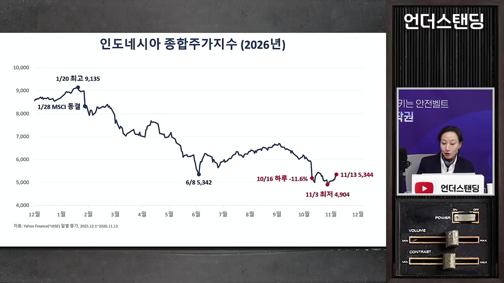
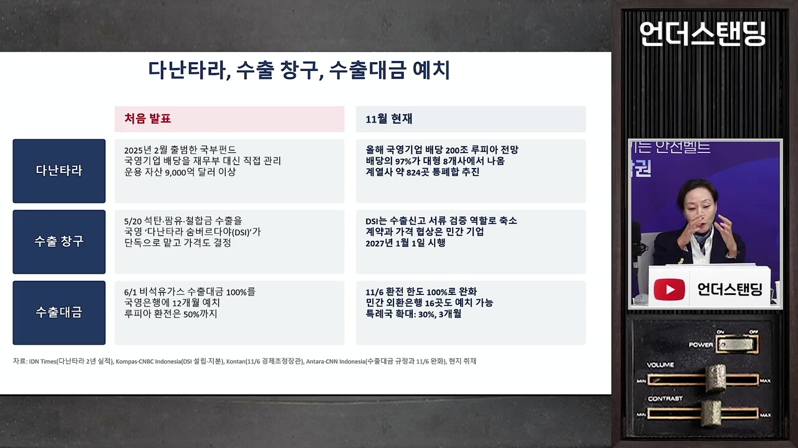
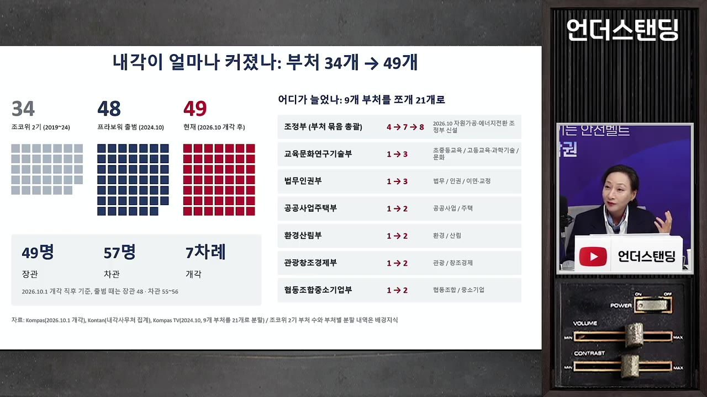

인도네시아 증시 신흥국 지수에서도 쫓겨날 위기. 대통령의 자원 통제와 8천만 무상급식 대혼란 (연세대 디지털통상연구센터 고영경 교수)
▶ 원본 영상 보기한눈에 보기
- 인도네시아 증시는 연초 사상 최고치 9,135에서 5,200대로 떨어졌고, 루피아도 달러당 16,700에서 18,000 선을 넘었다.
- MSCI는 신흥국(Emerging)에서 최하위 스탠드얼론(Standalone)으로 강등할 수 있다고 경고했다. 이유는 낮은 유통주식 비율, 불투명한 지배구조, 시세조종 의심, 미흡한 집행이다.
- 프라보워 대통령의 자원 통제(수출 창구 일원화, 수출대금 12개월 예치)와 권력 집중, 무리한 무상급식이 정책 불확실성을 키웠다. 정부는 일부 정책에서 물러선 상태다.
- 고영경 교수는 성장률 5% 안팎, 2억 8천만 내수, 법으로 묶은 재정 한도를 근거로 1997~98년식 위기 가능성은 낮다고 본다.
- 한국 기업에는 진입장벽이 높지만 한번 자리 잡으면 경쟁이 적은 시장이고, 베트남 쏠림을 분산한다는 점에서도 가치가 있다.
이런 분께 도움이 됩니다
- 인도네시아 증시 급락과 MSCI 강등 논란의 맥락을 알고 싶은 투자자
- 동남아 진출·투자를 검토하는 기업 실무자
- 신흥국 정치 리스크와 국가 주도 산업정책의 한계를 이해하고 싶은 분
핵심 내용
증시·환율 상황
- 증시는 올초 사상 최고치 9,135를 찍은 뒤 급락해 지난주 5,344, 영상 촬영일 5,200대까지 내려갔다. (3:25)
- 1월에 MSCI가 "강등할 수 있다"고 첫 경고를 했고, 11월에 "스탠드얼론으로 보낼 수 있다"는 더 센 경고가 나왔다.
- 환율은 연초 달러당 16,700루피아에서 18,000을 돌파했다. 주가는 반토막, 환율은 20% 가까이 올라 외국인은 이중으로 손실을 본 셈이다. (10:05)
- 미국 금리 상승으로 신흥국 매력이 떨어진 데다 정책 불확실성이 겹쳤다.
- 신흥국 자금은 지수(인덱스) 기준으로 움직이므로, 강등 가능성만으로도 신규 유입은 없고 이탈만 나온다.

💡 MSCI 경고는 지수 추종 자금의 이탈 신호라서, 개별 기업 실적과 무관하게 시장 전체를 누른다.
MSCI가 문제 삼은 것
- 스탠드얼론은 신흥국(Emerging) 아래의 프런티어(Frontier)보다도 더 아래 분류다. 레바논, 짐바브웨 같은 나라가 속한다. (4:13)
- 상장사는 900개가 넘고 대형주(은행 등)는 투명하지만, 유통주식 비율이 상장 요건상 최소 7%로 너무 낮다. 평균은 약 25%다.
- 물량이 적으면 소수 매수나 호재 공시로 시세조종이 가능하다.
- 최종 대주주가 누구인지 불투명하다는 점도 지적됐다.
- 정부가 최소 유통주식 비율을 15%로 올렸지만 아직 200~300개 기업이 요건을 못 맞춘 유예 상태다.
- 10~11월에는 제도 개선에 더해 실제 집행·처벌 의지를 보이라는 요구(자막상 '인포스먼트')가 추가됐다.
- 11월에는 두 개 종목이 지수에서 제외됐다. 연관성이 의심되지만 조사 결과는 아직 미진하다고 교수는 본다. (자막 불분명한 부분 있음)
- 교수의 해석: 외국인이 가장 싫어하는 것은 시세조종 방치에 대한 신뢰 상실이다.
🔁 MSCI 판단 일정
- 1월 첫 경고
- 정부 대응
- 11월 재경고
- 4월 평가 시작
- 6월 최종 판단
- 11월 첫 경고
강등 가능성 경고, 유통주식 비율 지적
- 2정부 대응
최소 유통비율 7%→15%로 상향
- 311월 재경고
스탠드얼론 강등 가능성까지 언급
- 44월 평가 시작
서류를 취합해 평가 개시
- 56월 최종 판단
강등 여부 결정
- 4월 평가 전에 유의미한 조치가 나오려면 올 연말~내년 초에는 실행 결과가 보여야 한다.
💡 신뢰 회복의 승부처는 "규정 변경"이 아니라 "실제 처벌과 집행"이다.
자원 통제 정책과 후퇴
- 인도네시아는 니켈 최대 보유국이고 팜유 최대 수출국이다. 석탄, 구리, 보크사이트, 석유·가스도 풍부하다. 원광 수출 금지 후 국내 가공(다운스트림)은 전임 정부부터의 방향이라 그 자체는 문제가 아니다. (12:24)
- 프라보워 정부는 여기서 더 나갔다.
- 국영기업 자산을 모아 관리하는 국부펀드를 만들었다. (명칭은 자막상 불분명)
- 그 산하 자회사를 통해서만 석탄·팜유·철합금 등을 수출하게 하려 했다. 사실상 국가가 길목에 서는 구조다.
- 석유·가스를 뺀 자원의 수출대금 100%를 국영은행에 12개월 예치하게 했다.
- 가격·물량 통제 시도도 있었다.
- 시장 반응이 나쁘고 루피아가 더 약해지자 정부가 물러섰다. (16:02)
- 국부펀드는 직접 관리가 아니라 통폐합·효율화로 방향을 바꿨고, 수출 창구 일원화는 모니터링 수준으로 낮췄다.
- 예치 의무는 일부 면제하고, 한국·일본 등의 현지법인 수출은 100% 예치에서 예외로 한다는 발표가 나왔다.
- 대통령은 "싸게 팔 바에야 땅에 묻어 두겠다", MSCI에는 "감히 우리를 짓밟는다"는 식의 강경 발언을 했다. 그래서 정책이 완화돼도 언제 다시 강경해질지 모른다는 불안이 남는다.
- 자원 거래소를 만들어 직접 가격을 정하겠다는 구상도 있는데, 교수는 쉽지 않다고 본다.

💡 정책 방향보다 "예고 없이 바뀌는 방식"이 투자자에게 더 큰 리스크다.
권력 집중과 정치 갈등
- 프라보워는 군 장성 출신이고 대선 5번째 출마에서 당선됐다. 수하르토의 사위였고 금융위기 때 실각 후 해외 체류를 거쳐 정치에 복귀했다. (17:33)
- 조코위(전임 대통령)의 지지를 업고 그의 아들을 러닝메이트로 삼아 압도적으로 당선됐지만, 권력은 사실상 둘로 나뉘어 있었다.
- 내각은 조코위 때 34명에서 장관 48~49명, 차관 57명으로 커졌고 개각은 7차례였다. 군 출신이 맡는 민간 직위와 지역 군사령부도 늘렸다. (21:32)
- 작년 대규모 시위는 의원·장차관 주거 보조비 논란과 "민주주의 후퇴 반대"에서 불붙었다.
🔁 최근 권력 재편
- 경찰청장 비서실장 임명
- 도청 신고 접수
- 신속 구속
- 새 경찰청장
- 부통령 사임
- 1경찰청장 비서실장 임명
조코위 쪽으로 분류되던 인사를 10월 1일 임명
- 2도청 신고 접수
10월 30일 대통령 도청 신고가 접수됨
- 3신속 구속
피해자로 지정된 뒤 곧바로 구속
- 4새 경찰청장
대통령이 끌어올린 인물로 교체
- 5부통령 사임
고교 학력 인정서 무효 판결 뒤 탄핵 절차 압박으로 사임
- 이 일련의 일이 계획된 것인지는 확인된 바 없다. 의심하는 사람들이 있을 뿐이며 도청 여부도 밝혀지지 않았다고 교수는 선을 긋는다.
- 연정 안의 조코위 측 인사들은 장관·정당에서 이탈하고 있다.
- 권력이 한 명에게 모이면 안정적이라는 시각도 있다. 그러나 교수는 대통령이 시장 개입을 넓히려 할 때 쓴소리할 사람이 없어 브레이크가 사라지는 리스크가 크다고 본다. (35:16)
- 싱가포르와 산불 연무 책임 공방을 벌이다 싱가포르행 LNG 공급을 약 9% 줄였고, 이후 ASEAN 정상회의에서 사과했다. 강경과 유화를 오가는 스타일의 사례다.
- 장점으로는 장악력과 리더십이 꼽히고, 문제는 정책 방향이 시장 친화적이지 않다는 것이다.
- 지지율은 많이 빠졌다. 부패, 민생에 대한 무관심, 연료 보조금 부담이 이유로 거론된다.
- 교수는 선거와 정권 교체가 이뤄지고 젊은 층·대학 진학률이 높아져 시위 동력이 있으므로, 대통령이 끝까지 밀어붙이기는 어렵다고 본다.

💡 "한 명이 다 쥔 정치"는 안정이 아니라 견제 장치의 부재로 읽힌다.
무상급식 대혼란
- 대상은 초중고생과 임산부 등 8천만 명이 넘는 규모로 출발했다가 약 5천만 명으로 줄였다. 그래도 계란 한 개씩만 해도 5천만 개다. (25:05)
- 인도네시아는 동서 약 5,000km, 섬이 17,500개라서 급식센터가 27,000개 넘게 필요하고, 냉장·냉동 시설도 갖춰야 한다. 원래 없던 급식 업체 산업을 갑자기 만든 셈이다.
- 속도를 너무 빨리 올린 탓에 문제가 이어졌다.
- 급식 전담 기관인 국민영양청에서 비리가 터져 청장·부청장이 물러났다.
- 식중독 피해는 보고된 것보다 훨씬 많을 것으로 추정된다.
- 납품·배송 이권이 개입했다.
- 교수는 예산보다 운영 부실이 시민 사회에서 받아들여지기 어렵다고 본다. (27:46)
- 취지 자체는 서민 지지를 받았다. 조코위 때 복지카드·학교 지원으로 진학률이 올랐고, 낙후된 오지에서는 급식이 등교 유인이 될 수 있다.
💡 좋은 취지도 실행 속도가 현실을 앞서면 정치적 부담으로 돌아온다.
경제 기초체력은 견조
- 성장률은 5.1%로 우수하다(베트남이 너무 높을 뿐). (35:45)
- 정부 부채는 GDP 대비 상한 60%이고 현재 40%대 초반이다(자막상 일부 불분명). 재정 적자는 GDP의 3%로 법에 묶여 있다. 외환보유고도 견조하다고 평가했다. (36:24)
- 2억 8천만 명 내수가 버팀목이고, 올해는 정부 지출(무상급식, 인프라)이 내수를 받쳤다. 자원 가격이 높은 것도 수출에 유리하다.
- 다만 물가 상승으로 서민 생활은 점점 어려워지고 있다.
- 원유는 나지만 정제 시설이 부족해 연료를 수입하고, 오토바이 1억 대 이상에 보조금을 주기 때문에 유가 상승에 민감하다.
- 교수는 1997~98년식 금융위기 재연은 과도한 우려라고 본다. 스탠드얼론 강등도 시장 규모와 상징성 때문에 막으려 할 것이라고 본다. 한편 MSCI 자카르타 지부가 발표를 몰랐다는 확인되지 않은 소문도 전했다.
- 신용등급은 강등 예고는 있었으나 실제 큰 강등은 없었고 조달 비용이 조금씩 오르는 중이다.
💡 위기의 본질은 펀더멘털이 아니라 정책 신뢰와 자본시장 제도다.
한국 기업에 주는 의미
- 진출 법인 수는 베트남 약 1만 개, 인도네시아 약 2,300~2,500개다. 교민 사업체까지 합치면 더 많다. (1:09)
- 진출 기업은 현대차, 포스코, 롯데케미칼, 은행·증권사, 제약, 코스맥스, 프랜차이즈 등 다양하다. KB가 인수한 현지 은행은 어려움을 겪고 있다.
- 예측 가능성 저하는 확장 결정에 부담이지만, 교수는 어느 신흥국이든 이 정도 어려움은 있다고 본다.
- 진입이 어려운 만큼 들어간 기업은 경쟁자가 적다(일본차 점유율 90% 이상, 삼성 스마트폰 호조).
- 지역별 최저임금이 달라 봉제 등은 내륙으로 이동했다.
- 베트남에 투자가 쏠려 있어 대안 카드를 갖고 있어야 협상력도 생긴다. 정책 변화는 현지 기업·정부와 먼저 소통해 대응한다.
- 현대차가 동남아에서 조금만 더 팔면 세계 2위가 된다는 언급도 있었다. 일본차의 브랜드 우위가 큰 지역이다.
- 조코위 때는 관계가 매우 좋았고 잠수함 판매와 방산 협력도 이어지고 있다.
💡 인도네시아는 "빼느냐"가 아니라 "한 곳에 쏠리지 않게 분산하느냐"의 문제다.
자원 의존에서 제조업으로
- 국내 가공 정책은 방향이 맞지만, 니켈 가공에는 중국이 자본·기술로 먼저 들어와 자국 기업의 참여가 올라가지 않았다. (45:36)
- 한국은 반도체 혜택, 수출 기업 우선, 정부·민간 공동 연구소 같은 방식으로 정부 정책과 기업 이해를 일치시켰다.
- 필요한 것은 실패와 손실을 견디는 인내자본(patient capital)과 정부-기업의 이해 일치(인센티브 얼라인먼트)다. (1:06:15)
- 자원 기업은 자원 사이클로 이익을 내면 되기 때문에, 수십 년의 R&D로 기술을 키울 동기가 약하다. 이를 바꾸는 정교한 산업정책이 과제다.
💡 자원 국유화보다 "자국 기업이 기술을 배우는 구조"가 성패를 가른다.
기억할 숫자·인용
| 항목 | 숫자 |
|---|---|
| 증시 | 올초 최고 9,135 → 5,200대 |
| 환율 | 16,700 → 18,000+ 루피아/달러 |
| 유통주식 최소 비율 | 7% → 15% |
| 미달 기업 | 200~300개 |
| 내각 | 장관 34명 → 48~49명, 차관 57명, 개각 7차례 |
| 무상급식 | 8천만 → 5천만 명, 급식센터 27,000개+ |
| 성장률 / 부채 / 적자 | 5.1% / 상한 60% / GDP 3% |
| 진출 법인 | 베트남 약 1만, 인도네시아 약 2,300~2,500 |
- MSCI 최종 판단은 내년 6월, 평가 시작은 4월.
- 교수의 베스트 시나리오: "적당히 유화적이고 브레이크가 어느 정도 잡히는 것" (57:41)
생각해볼 점
- 교수의 낙관(위기 재연 가능성 낮음)은 출장 경험과 판단에 기반한 견해다. 외국인 자금 이탈 속도에 따라 단기 변동성은 훨씬 클 수 있다.
- 도청 사건과 부통령 사임을 의도된 권력 정리로 보는 시각은 확인되지 않은 의심이며, 영상에서도 판결·조사 전이라고 선을 그었다.
- 자막이 자동생성이라 일부 고유명사(국부펀드 이름 등)는 부정확하다. 투자 판단 전에 MSCI 발표문과 현지 보도로 확인이 필요하다.
- 영상은 한국 기업 진출 관점이 강하다. 현지 시민, 노동, 환경 측면은 다루지 않았다.
바로 해볼 일
- MSCI 인도네시아 관련 공지(1월·11월)와 내년 4월·6월 일정을 확인해 달력에 적어 두기
- 인도네시아·동남아 노출이 있다면 베트남 등 한 국가 쏠림 비중을 점검하기
- 수출대금 예치 예외 조건(현지법인 요건)을 인도네시아 정부 발표나 거래 은행에서 확인하기 (해당 기업 한정)